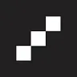
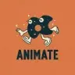

Hailuo AIYouTube и блогинг
Hailuo AI помогает создавать короткий видеоматериал по задумке или изображению. При просмотре важно оценивать действие целиком, а не только удачный первый кадр.
Генерация видео: Для первого сравнения используйте одинаковый запрос и исходник. Оцените движение, устойчивость героя, доступную длину и экспорт.
Опишите один эпизод для видеозаставки: объект, его движение и поведение камеры. Начните с простой сцены без смены мест; при просмотре проверьте, не изменились ли предмет и фон по ходу ролика.
Создай короткую сцену: красная чашка на деревянном столе у окна, над напитком поднимается пар. Камера плавно приближается, утренний свет остаётся ровным, посторонние предметы не появляются.

Hailuo AI помогает создавать короткий видеоматериал по задумке или изображению. При просмотре важно оценивать действие целиком, а не только удачный первый кадр.

В инструменте «Neurosphere» можно собирать видеосцену по описанию или визуальному исходнику. Ещё одно направление работы: получать изображения из словесного задания.

OpenArt предоставляет ИИ-инструменты для создания изображений и их дальнейшего изменения. Продукт ориентирован в том числе на художественные ресурсы, которые автор может редактировать. Генерация и обработка объединены, чтобы пользователь продолжал работу над выбранным визуальным материалом в пределах инструмента.

Sorin рассчитан на задачи, где нужно собирать видеосцену по описанию или визуальному исходнику. Ещё одно направление работы: готовить видеоматериалы для публикации.
В инструменте «Vidu AI» можно собирать видеосцену по описанию или визуальному исходнику. Ещё одно направление работы: готовить видеоматериалы для публикации.
WaveSpeedAI рассчитан на задачи, где нужно собирать видеосцену по описанию или визуальному исходнику. Ещё одно направление работы: получать изображения из словесного задания.

В инструменте «AI Ease» можно собирать видеосцену по описанию или визуальному исходнику. Ещё одно направление работы: менять фотографии с учётом выбранного оформления.
aiTurbo рассчитан на задачи, где нужно собирать видеосцену по описанию или визуальному исходнику. Ещё одно направление работы: получать изображения из словесного задания.

В инструменте «AKOOL» можно переносить образ лица на изображение или видеокадр. Ещё одно направление работы: собирать видеосцену по описанию или визуальному исходнику.

APOB.AI позволяет использовать созданный образ персонажа в последующих визуальных генерациях. Такой подход полезен, когда в разных материалах нужно удерживать узнаваемую внешность.

Colossyan Creator рассчитан на задачи, где нужно собирать видеосцену по описанию или визуальному исходнику. Ещё одно направление работы: готовить видеоматериалы для публикации.

LTX Studio рассчитан на задачи, где нужно собирать видеосцену по описанию или визуальному исходнику. Ещё одно направление работы: готовить видеоматериалы для публикации.

NVIDIA Studio используют для задачи: готовить трёхмерный объект для проекта. Ещё одно направление работы: собирать видеосцену по описанию или визуальному исходнику.

Picsart используют, чтобы собирать видеосцену по описанию или визуальному исходнику. Ещё одно направление работы: менять фотографии с учётом выбранного оформления.

Simplai рассчитан на задачи, где нужно собирать видеосцену по описанию или визуальному исходнику. Ещё одно направление работы: менять фотографии с учётом выбранного оформления.
Synthesys используют для задачи: собирать видеосцену по описанию или визуальному исходнику. Ещё одно направление работы: готовить материалы о товарах и услугах.

VEED.IO объединяет браузерный видеоредактор, субтитры и инструменты ИИ для создания материала. Подходит для оформления коротких публикаций и обработки готовой записи.

В инструменте «Wan AI» можно собирать видеосцену по описанию или визуальному исходнику. Ещё одно направление работы: получать изображения из словесного задания.

Zeemo создаёт субтитры для видео и предоставляет средства их дальнейшей правки. Пользователь может работать с динамическим оформлением, переводить текст и редактировать субтитры группами. Дополнительные видеоинструменты служат для подготовки публикаций, где нужно сочетать исходный ролик с читаемым текстовым сопровождением на разных языках.

Pictory используют для превращения подготовленного содержания в видео. Отбор эпизодов и текст в кадре стоит проверять по главной мысли исходного материала.

PixVerse предназначен для создания видеоматериала из запроса или изображения. Конкретное движение и обязательные детали сцены стоит обозначить заранее.

ScreenStory используют для задачи: собирать видеосцену по описанию или визуальному исходнику. Ещё одно направление работы: готовить видеоматериалы для публикации.

Seedance используют, чтобы собирать видеосцену по описанию или визуальному исходнику.

В инструменте «Spot AI» можно собирать видеосцену по описанию или визуальному исходнику. Ещё одно направление работы: выполнять задачи с веб-страницами.
Wondershare Virbo создаёт ролики с цифровыми ведущими и говорящими фотографиями. В приложении доступны озвучка материала, готовые аватары и шаблоны видео.
Filmora AI предлагает инструменты для создания видеоматериала и изменения готовых роликов. Решение предназначено для работы с видео с применением ИИ.

HeyGen создаёт видео с говорящими аватарами и помогает переводить ролики. Качество рабочего материала зависит от сценария, произношения и согласованного использования лица и голоса.

ImagineArt используют, чтобы собирать видеосцену по описанию или визуальному исходнику. Ещё одно направление работы: менять фотографии с учётом выбранного оформления.

Runway объединяет генерацию видео, преобразование кадров и творческие рабочие процессы. Начинать удобнее с конкретного плана сцены и требований к сохранению объектов.

Synthesia помогает создавать видео с цифровыми ведущими, переводить материал и оформлять обучение. Начинать стоит с утверждённого сценария и способа проверки понимания.

Topaz Video AI используют, чтобы собирать видеосцену по описанию или визуальному исходнику. Ещё одно направление работы: готовить видеоматериалы для публикации.

В инструменте «Verbatik» можно готовить музыкальную композицию по заданию. Ещё одно направление работы: собирать видеосцену по описанию или визуальному исходнику.

VideoGen используют для задачи: собирать видеосцену по описанию или визуальному исходнику. Ещё одно направление работы: готовить видеоматериалы для публикации.

AdpexAI используют для задачи: собирать видеосцену по описанию или визуальному исходнику. Ещё одно направление работы: получать изображения из словесного задания.

AnimateDiff добавляет движение к генеративной работе с изображениями. Для осмысленного результата нужны описание сцены и подходящее окружение запуска модели.

В инструменте «Arcads» можно готовить материалы о товарах и услугах. Ещё одно направление работы: собирать видеосцену по описанию или визуальному исходнику.

Clipfly относится к инструментам, которые помогают готовить музыкальную композицию по заданию. Ещё одно направление работы: собирать видеосцену по описанию или визуальному исходнику.

В инструменте «Cliptalk» можно собирать видеосцену по описанию или визуальному исходнику. Ещё одно направление работы: готовить видеоматериалы для публикации.
Genmo используют, чтобы собирать видеосцену по описанию или визуальному исходнику. Ещё одно направление работы: готовить видеоматериалы для публикации.

Liminal AI рассчитан на задачи, где нужно собирать видеосцену по описанию или визуальному исходнику. Ещё одно направление работы: готовить материалы о товарах и услугах.

В инструменте «Visla» можно собирать видеосцену по описанию или визуальному исходнику. Ещё одно направление работы: готовить видеоматериалы для публикации.

VisualGPT рассчитан на задачи, где нужно собирать видеосцену по описанию или визуальному исходнику. Ещё одно направление работы: менять фотографии с учётом выбранного оформления.
Страница 3 из 3